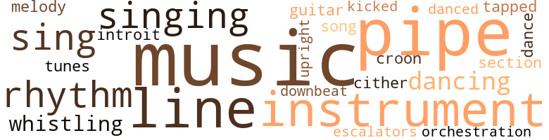
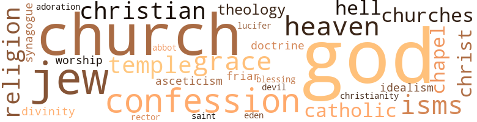

Music terms in the text
54 music-related terms matched in this text.
Most frequent terms in this topic: music (11); pipe (8); line (3); instrument (3); rhythm (2)

croon.v.01
Definition: sing softly
| word |
sentence |
| croon |
Jackson began to croon with what seemed like sarcasm at worst . |
dance.v.02
Definition: move in a pattern; usually to musical accompaniment; do or perform a dance
| word |
sentence |
| dancing |
And Paul was dancing and slapping himself to the needle-pricking rhythm of hot stabs and steam . |
dance.v.03
Definition: skip, leap, or move up and down or sideways
| word |
sentence |
| dance |
" Come on , let 's dance a while , we 'll be sitting for hours , soon enough . " |
| dancing |
Paul had caught him several times since that Wednesday chortling to himself and dancing his fingers on the top of his desk . |
| danced |
They had danced through so many records . |
downbeat.n.01
Definition: the first beat of a musical measure (as the conductor's arm moves downward)
| word |
sentence |
| downbeat |
" She tells me that wild horses could n't drag you out for the downbeat , but sometimes I do feel a bit guilty the way you and Nina keep giving up your concert tickets ... . |
escalator_clause.n.01
Definition: a clause in a contract that provides for an increase or a decrease in wages or prices or benefits etc. depending on certain conditions (as a change in the cost of living index)
| word |
sentence |
| escalators |
Water on escalators everywhere . |
guitar.n.01
Definition: a stringed instrument usually having six strings; played by strumming or plucking
| word |
sentence |
| guitar |
In the course of passing words with each other over the weeks , Paul had talked with Ray about Johnny 's talent with the guitar . |
introit.n.01
Definition: a composition of vocal music that is appropriate for opening church services
| word |
sentence |
| introit |
Paul could remember the introit of the mass for that day . |
kick.v.04
Definition: kick a leg up
| word |
sentence |
| kicked |
Paul jammed his hands in his trouser pockets and kicked towards the curb . |
music.n.01
Definition: an artistic form of auditory communication incorporating instrumental or vocal tones in a structured and continuous manner
| word |
sentence |
| music |
Mostly about what he wanted to do with his music . |
| music |
Let them have their fun , even though , if there was any music , the chatter - ing din was too pervasive to let it come through . |
| music |
At least I 'm learning to like the kind of music I find at most of them ... in the vein of classical jazz . " |
| music |
In spite of what he had said to Mr. Bidwell about learning to like Lydia 's choice of music , Paul still had n't gotten beyond accepting it as a background for his thoughts , or some sort of sociological setting . |
| music |
Most of Lydia 's music haunts were located there . |
| music |
Paul had come to know that there he would find the thin wail of that searching music . |
| music |
Lydia was lost in the music , leaving him alone , pent up with happy thoughts of the future , which he wanted to tell her , if only he could find the right moment . |
| music |
The music at Ray 's would n't divide them the way this was doing . |
| music |
Lydia rewarded Paul 's submission by patting him on the hand and submerging herself again closed-eyed in the music . |
| music |
No music or anything else could be as ardently vital as what Paul knew the evening called for , since Mr. Bidwell had spoken to him with tacit ap - proval . |
| music |
Paul cuddled Lydia closer to him and let himself be wed to the plastic movement of the music . |
musical_instrument.n.01
Definition: any of various devices or contrivances that can be used to produce musical tones or sounds
| word |
sentence |
| instrument |
That mop - almost an instrument of torture . |
| instruments |
They were kept as natural objects , part of the unorganized instruments which human system used to survive upon - like the food men ate and the ores they assembled into working machinery . |
| instrument |
Paul could hear her wire - tinged voice breathing into the instrument . |
| instrument |
So long just an instrument of pleasure . |
orchestration.n.01
Definition: an arrangement of a piece of music for performance by an orchestra or band
| word |
sentence |
| orchestration |
Maybe the tacit agreement bar - ring the others was the unspoken difference between a seventy - cent blue bottle of beer growing flat to the anesthetic seeping of live orchestration , as opposed to the twenty-five cent amber next door , tossed off to the jungle throb of a juke box . |
pipe.n.04
Definition: a tubular wind instrument
| word |
sentence |
| pipe |
It was probably the sight of Jack - son propped up in a stuffed chair , reading a newspaper and smoking a pipe which put the idea in Paul 's mind . |
| pipe |
Jackson spoke with a grin and the pipe still in his mouth . |
| pipe |
He was lighting his pipe , and from his expression , he was indeed enjoy - ing an accomplishment . |
| pipe |
Mr. Bidwell interrupted his self examina-tion for what had to be his pipe and concentrated his emphasis on the annihilation of concerts . |
| pipe |
Hah ... " He muffled almost inarticulately , jamming a ridiculously stumped and shallow-bowled pipe into one corner of his mouth . |
| pipe |
Mr. Bidwell puffed on his pipe , declining an immediate reply . |
| pipe |
Mr. Bidwell sat up with a triumphant jolt and shook his pipe over the table in Paul 's direction . |
| pipe |
He began to knock his pipe out against the diced terra cotta floor . |
rhythm.n.04
Definition: the arrangement of spoken words alternating stressed and unstressed elements
| word |
sentence |
| rhythm |
His free hand tapped out some sort of rhythm , and he seemed to be blowing the melody into his glass , nodding his head abstractedly , the while . |
| rhythm |
And Paul was dancing and slapping himself to the needle-pricking rhythm of hot stabs and steam . |
section.n.01
Definition: a self-contained part of a larger composition (written or musical)
| word |
sentence |
| section |
The barman at his section of the counter did n't seem to notice . |
sing.v.02
Definition: produce tones with the voice
| word |
sentence |
| sing |
Mike used to sing - a heavenly tenor , his mother had told him . |
| sing |
And when he said his words of con - trition , they were broken and jumbled , not at all like the lifting beauty of the penitential psalms he used to sing at St. Maur 's , reveling in the ecstasy of that sound of remorse , innocent of all which felt its sting . |
singing.n.01
Definition: the act of singing vocal music
| word |
sentence |
| singing |
The good old rah-rah days and glee singing over the beery foam . |
| singing |
" Ma , " Paul said after his silent thoughts , " what 's that you 're singing ? |
song.n.01
Definition: a short musical composition with words
| word |
sentence |
| song |
After that , six hidden years of books and song had been an easy task . |
tapdance.v.01
Definition: dance and make rhythmic clicking sounds by means of metal plates nailed to the sole of the dance shoes
| word |
sentence |
| tapped |
His free hand tapped out some sort of rhythm , and he seemed to be blowing the melody into his glass , nodding his head abstractedly , the while . |
tune.n.01
Definition: a succession of notes forming a distinctive sequence
| word |
sentence |
| line |
" You know , Paul , I 'm not out to indoctrinate you away from your own con-clusions , or your party line , or however else you think about sex behavior and people 's opinions of it ... but as far as I 'm con - cerned , sex is important only when you 're in it yourself ... . |
| tunes |
And through it all his mother tended him , humming snatches of tunes which rocked the cradle of unconscious days , skirting the edges of his memory with an elusive familiarity . |
| melody |
His free hand tapped out some sort of rhythm , and he seemed to be blowing the melody into his glass , nodding his head abstractedly , the while . |
| line |
I wish it had n't , ... but you 'll have to sort it out yourself ... and if you find that you 're on the wrong track , I know you 'll change your line ... . |
| lines |
Boy , I 've passed through so many bashful lines , playing marshal to my fair maiden , that I 've lost track of them ... . |
| line |
For of one thing Paul had always been sure , even in his innocence : whatever had happened between Pete and that girl , whoever she was , she had first stepped beyond the pale of morality ; and once beyond that straight line , she lost the right to accuse . |
| lines |
When he returned , the room was ablaze with light , and Lydia was making appropriate gestures as she pantomimed the sophisticated voice of some actress , who was speaking her lines from a recording . |
upright.n.02
Definition: a piano with a vertical sounding board
| word |
sentence |
| upright |
Lydia sat upright , with a bracing shudder , and her eyes were glazed and distant . |
whistle.v.01
Definition: make whistling sounds
| word |
sentence |
| whistling |
Paul could hear the whistling even under the roar of the dunning water . |
| whistling |
Yeah ... " Paul could hear Jackson 's feet padding from the bath to the bedroom , walking and whistling softly . |
zither.n.01
Definition: a musical stringed instrument with strings stretched over a flat sounding board; it is laid flat and played with a plectrum and with fingers
| word |
sentence |
| cither |
He did n't have their father Mike 's long , gold-tipped lushes cither . |
Violence terms in the text
126 violence-related terms matched in this text.
Most frequent terms in this topic: spite (12); hurt (9); harm (6); hate (4); choked (4)

abrasion.n.01
Definition: an abraded area where the skin is torn or worn off
| word |
sentence |
| scratch |
She might have been Nora when he came to her with a bruised finger or a scratch . |
aggravation.n.02
Definition: unfriendly behavior that causes anger or resentment
| word |
sentence |
| provocation |
It was an ugly moment , and it reminded Paul of her cold fury when she had rammed that ill - parked car that night - except that this time , there was no out - burst , only a ripple of annoyance , all the more callous because Paul could see no provocation for it . |
anger.n.01
Definition: a strong emotion; a feeling that is oriented toward some real or supposed grievance
| word |
sentence |
| Anger |
Anger was a petty emotion now . |
| anger |
His mother had been a cold mixture of supressed anger and fright while she had demanded a detailed account of something he had n't even realized he had done until discom - fiture awoke him . |
| anger |
Dis - gust and anger alternated in successive waves , churning , churn - ing up resentment . |
| anger |
The kite had to come down , as what Paul was saying was too much on his mind - apart from anger - not to be said . |
bump.n.01
Definition: a lump on the body caused by a blow
| word |
sentence |
| bump |
There were worried-looking clerk types too , jumpy , like the fellow standing next to Paul , who at one point after Paul had begun to talk continuously with Jackson had given one last bump , as if with intentional spite , and then scurried out . |
craze.n.02
Definition: state of violent mental agitation
| word |
sentence |
| frenzy |
And more , if needs must be - cruelty and shame and the coital frenzy of beasts neither of whom had a right to blame the other . |
| frenzy |
The proprietress seemed to be seized with some compulsive frenzy to rearrange all of her merchandise displays . |
cut.n.05
Definition: a wound made by cutting
| word |
sentence |
| gash |
But the juicy red gash of his lips was articulately visible . |
destroy.v.04
Definition: put (an animal) to death
| word |
sentence |
| destroy |
I could n't stand the self - abasement and the competition to keep him ... and I would n't want ... I could n't destroy him just to keep him acting like t lover when he was already my husband . |
| destroyed |
So that 's why God had destroyed Sodom and Gomorrah . |
displeasure.n.01
Definition: the feeling of being displeased or annoyed or dissatisfied with someone or something
| word |
sentence |
| displeasure |
How did you express displeasure calmly ? |
draw.v.23
Definition: pull (a person) apart with four horses tied to his extremities, so as to execute him
| word |
sentence |
| drew |
As he did , he noticed that the golden boy drew up his shoulders and did a sort of ecstatic wriggling shimmy . |
| drew |
Lydia seemed to be amused and drew up her waist with a definite accentuation . |
ferociousness.n.01
Definition: the trait of extreme cruelty
| word |
sentence |
| viciousness |
He laughed with an exaggerated toothy show of mock viciousness . |
| viciousness |
He was beating his own soul , but his hands were too near Lydia 's throat , digging into her collarbone with an insensate viciousness . |
| viciousness |
And then he felt somewhat repentant for both sounds of viciousness . |
ferocity.n.01
Definition: the property of being wild or turbulent
| word |
sentence |
| fierceness |
After a man 's fierceness has conquered , it is the softness of his woman 's heart which completes his victory . |
fight.v.02
Definition: fight against or resist strongly
| word |
sentence |
| fight |
He did n't have the energy or the heart to embarrass or fight with a man in his own bed . |
fit.n.01
Definition: a display of bad temper
| word |
sentence |
| tantrum |
" I really do n't know whether to laugh or cry or fly into a tantrum . " |
frustration.n.03
Definition: a feeling of annoyance at being hindered or criticized
| word |
sentence |
| frustration |
Sort of a weird display of frustration ... . |
| frustration |
All the weariness since coming home from St. Maur 's seemed to have descended on him at once , a smoth - ering patchwork of frustration . |
| frustrations |
And the rest of eternity already re - duced to animal functions , and whatever an animal with a mind does to ease his frustrations . |
fury.n.01
Definition: a feeling of intense anger
| word |
sentence |
| rage |
That 's the end of the illusion , and in rage at being forced to see how ugly she really is , she smashes the glass . |
| fury |
Paul had been midway between Altoona and Pittsburgh , before his driving fury left him . |
| fury |
And if Pete was already cleared of the rape charge against him , Paul could still give him understanding-understanding of desire and passion , of a woman 's offering and a man 's misappre - hension , of a man 's disgust and a woman 's fury . |
| rage |
Paul 's voice was choked with rage at the man 's barely concealed insinuations . |
| fury |
And then Judy 's businesslike briskness , which had accelerated to such random fury , seemed to vanish completely . |
| fury |
It was an ugly moment , and it reminded Paul of her cold fury when she had rammed that ill - parked car that night - except that this time , there was no out - burst , only a ripple of annoyance , all the more callous because Paul could see no provocation for it . |
| rage |
Wounded pride was not big enough to cover the width of his desire , either , because Paul knew full well , even with his hands of rage at Lydia 's throat , that she had led him only because he had blinded himself . |
gag.v.06
Definition: cause to retch or choke
| word |
sentence |
| choking |
And then the bitterness welled out with the choking rasp of phlegm . |
| choked |
It had been a choked , almost maddening chore , but Paul - Brother Hilarion - had learned to welcome it . |
| choke |
Jackson seemed to choke on a swallow . |
| choked |
When he was choked with saliva and tears , it stopped as abruptly as it had begun . |
| choked |
And Paul saw himself running home furiously , choked with nause - ous resentment against all of them , but striking the vision of the one who was feeling Pete 's muscles . |
| choked |
Paul 's voice was choked with rage at the man 's barely concealed insinuations . |
grass.v.01
Definition: shoot down, of birds
| word |
sentence |
| grassed |
Am then she had gone on to talk about the dowager loaded down with tissues when they aired their pets in the various city square and grassed plazas . |
grudge.n.01
Definition: a resentment strong enough to justify retaliation
| word |
sentence |
| grievance |
The face of a stern God loomed with mortal grievance . |
gun.n.01
Definition: a weapon that discharges a missile at high velocity (especially from a metal tube or barrel)
| word |
sentence |
| gun |
And he remembered , too , the way the kids would stick their tongues out if the proprietor succeeded in chasing them away - their tongues out , and their thumbs gun - ning from their noses , or sprouting antlers from their ears , or wiggling fingered tails from their turned-up behinds . |
| guns |
His walls held mounted guns of expensive-looking deadliness . |
hate.v.01
Definition: dislike intensely; feel antipathy or aversion towards
| word |
sentence |
| hate |
I would hate to have been wrong on that . |
| hate |
I 'd hate to see you become an old jade like me - we 're plentiful enough . " |
| hate |
That 's why I 'd hate to see any victim of white supremacy go over to Communism as an escape . |
| hate |
And to think that I could hate him too , if I wanted to , and be a perfectly good white American ... Catholic or Protestant ... . |
hostility.n.01
Definition: a hostile (very unfriendly) disposition
| word |
sentence |
| hostility |
And the vanquished would retreat , sullenly ignoring the intruders as a gesture of open hostility , or hiding their true feelings , knowing that even pain can be a sure commodity if it is sold at the price of luxury . |
hostility.n.02
Definition: a state of deep-seated ill-will
| word |
sentence |
| antagonism |
She seemed quite appreciative of the antagonism her aimed remarks had aroused . |
hurt.v.04
Definition: cause damage or affect negatively
| word |
sentence |
| hurt |
But the urge to hurt was too strong . |
| hurt |
- the desire to hurt ? |
indignation.n.01
Definition: a feeling of righteous anger
| word |
sentence |
| indignation |
Just for a moment - nausea sharing its queazy expansion with something akin to indignation . |
injury.n.01
Definition: any physical damage to the body caused by violence or accident or fracture etc.
| word |
sentence |
| hurt |
But Ray was n't angry , only hurt . |
| harm |
No harm meant on my part . |
| harm |
Paul laughed because Lydia seemed to be tickled with her cleverness , and there was n't any real harm in it . |
| injury |
You know , ... trying not to pant , and straining to pretend he does n't mind losing ... but ail the while you can see the injury in his eyes , even though he 's grinning ... . |
| harm |
No harm in a natural sugges - tion . |
| harm |
And harm was evil . |
| harm |
" No harm , Paul , no harm ... . |
| harm |
" No harm , Paul , no harm ... . |
invade.v.01
Definition: march aggressively into another's territory by military force for the purposes of conquest and occupation
| word |
sentence |
| invaded |
He had already taken a few furtive glances around him , when he came in , just as the noise had already invaded his sullen , averted ears . |
| invaded |
If not ... Paul 's thoughts were invaded by a feeling of pressure . |
| invaded |
Even terror would have been a more welcome emotion than the helpless sick feeling which invaded Paul at that moment . |
jealousy.n.01
Definition: a feeling of jealous envy (especially of a rival)
| word |
sentence |
| jealousy |
I thought I recognized jealousy and revenge when I saw them . |
| jealousy |
But that other idea is like so many general - ized statements - just a nasty expression of competitive jealousy , the kind that gave Hitler a world right to do what he did within Germany ... . |
kick.v.04
Definition: kick a leg up
| word |
sentence |
| kicked |
Paul jammed his hands in his trouser pockets and kicked towards the curb . |
kick_back.v.02
Definition: spring back, as from a forceful thrust
| word |
sentence |
| kicked |
Paul even kicked the table . |
| kick |
" I 'd kick the pants off of anybody who called me Junior - some of my service buddies can testify to that ... straight to the old ass . |
| kicked |
Paul kicked at a discarded ice-cream container which some - body had obviously thrown from a car . |
kill.v.10
Definition: cause the death of, without intention
| word |
sentence |
| kill |
After all , one must n't kill non-Anglo-saxon bodies , only their souls ... . |
| killing |
No sin in killing a man 's soul ... . |
| kill |
... But showing it is something that would really kill them ... . |
| killed |
Some goddam yellow bastard has killed you ... and you see yourself blown into stink - ing bits ! |
| kill |
He was ready to kill the enemy , more so if he had posed as his buddy . |
| killed |
And in return , Paul had learned that Judy 's only brother had been killed in the war , and her father , who had lived only to have a son past his Bar Mitzvah , had soon followed him . |
| kill |
Perhaps neglect could kill it . |
malice.n.01
Definition: feeling a need to see others suffer
| word |
sentence |
| spite |
And let me , by a freak accident , achieve some public good , and it will have been that white blood in me which asserted itself in spite of those poisonous black corpuscles ... . |
| maliciousness |
His own flesh had laid violent hands upon that part of himself which Mrs. Dougherty 's maliciousness and all its adverse effects upon him had not and could never have touched of themselves . |
| spite |
Paul had realized the uselessness of it all , as idle as his threat to write to Pete in spite of his mother 's contrary wish . |
| spite |
" We 're all natural creatures , Hilly , in spite of Father Jerome 's fire and brimstone to the contrary , ... not that his novices do n't need the scare he gives them , at least the discipline part . |
| spite |
There were worried-looking clerk types too , jumpy , like the fellow standing next to Paul , who at one point after Paul had begun to talk continuously with Jackson had given one last bump , as if with intentional spite , and then scurried out . |
| spite |
The room was day-white in spite of its Venetian-shuttered windows . |
| spite |
He had no right to feel so good - not a web in his head in spite of his merciless drinking the night before ; and everything else being the way it was . |
| spite |
But , in spite of what he had done - Paul was certain he had n't been dreaming last night - there was something different about him . |
| spite |
No seduction , in spite of Dolly 's rubbing against him , like a pet kitten . |
| spite |
If feeling that Jackson was as good as he himself was , in spite of his preferences sexually , indicated honesty - then Paul was honest . |
| spite |
And , in spite of what you call the Old Testament , Paul , I do n't see any glory in war - victorious or otherwise . |
| spite |
In spite of what he had said to Mr. Bidwell about learning to like Lydia 's choice of music , Paul still had n't gotten beyond accepting it as a background for his thoughts , or some sort of sociological setting . |
| spite |
Pete whom nature had anointed with the dew of fertility in spite of the New Testament . |
murder.n.01
Definition: unlawful premeditated killing of a human being by a human being
| word |
sentence |
| murder |
And you can bet that murder is n't the worst of them ... . |
| murder |
No doubt , murder 's the most visibly ugly crime , but it 's not nearly so sadistic as keeping a man alive only to destroy his soul ... . |
| murder |
Colored , a waiter , and all those shock - ing things about murder and isms . |
musket_ball.n.01
Definition: a solid projectile that is shot by a musket
| word |
sentence |
| ball |
... But that 's the way the ball bounces ! " |
pain.v.02
Definition: cause emotional anguish or make miserable
| word |
sentence |
| hurt |
Why use Ray , or misuse him , to hurt Lydia ? |
| hurt |
" I mean , I do n't want to do anything to hurt you or your family ... . |
| hurt |
" I would n't do anything to hurt Daddy or Nina , nor how they feel about you either ... . |
| hurt |
" I do n't want to hurt you in any way . |
| hurt |
She placed it on her breast , and patted it with hers , as if to convince him that he was n't hurt at all . |
| hurt |
A little man-to-man talk ca n't hurt any . " |
punch.n.01
Definition: (boxing) a blow with the fist
| word |
sentence |
| punch |
He would n't be a pawn ; and Tim deserved a punch in the nose . |
resentment.n.01
Definition: a feeling of deep and bitter anger and ill-will
| word |
sentence |
| resentment |
Dis - gust and anger alternated in successive waves , churning , churn - ing up resentment . |
| bitterness |
And then the bitterness welled out with the choking rasp of phlegm . |
| resentment |
And Paul saw himself running home furiously , choked with nause - ous resentment against all of them , but striking the vision of the one who was feeling Pete 's muscles . |
| resentment |
What achievement was there in seeing Nina 's green eyes crying tears of love for her grandchild , and tears of resentment towards the father , at the same time . |
riot.n.01
Definition: a public act of violence by an unruly mob
| word |
sentence |
| riot |
Or riot ? |
rioting.n.01
Definition: a state of disorder involving group violence
| word |
sentence |
| rioting |
" But I 'm sure Pleasant Lane is much too dignified for rioting ... . |
scuffle.v.02
Definition: fight or struggle in a confused way at close quarters
| word |
sentence |
| tussling |
A week of tussling with his frayed and twisted emotions had taught him that . |
self-flagellation.n.01
Definition: self-punishment inflicted by whipping
| word |
sentence |
| self-flagellation |
Paul could sense that , could feel the self-flagellation in Lydia 's refusal of him , if his soul was to enter into the body which had fulfilled her so many times . |
sting.n.03
Definition: a painful wound caused by the thrust of an insect's stinger into skin
| word |
sentence |
| sting |
And when he said his words of con - trition , they were broken and jumbled , not at all like the lifting beauty of the penitential psalms he used to sing at St. Maur 's , reveling in the ecstasy of that sound of remorse , innocent of all which felt its sting . |
| bite |
That was Paul 's world now , and he realized he had taken only the barest bite , the shortest sip . |
| bite |
" Sure you do n't want a bite to eat , first ? " he asked , handing Paul the paper . |
| sting |
She opened her eyes and turned slightly so that her cheek was resting on Paul 's and he had to bat his eyes to avoid the sting of a loose strand of her hair . |
| bite |
The least you can do is to fix me a bite to eat ... . |
stone.v.01
Definition: kill by throwing stones at
| word |
sentence |
| stoning |
At the weekly lapidatio , or stoning , which was a part of the Order 's penitential procedure , but which was taken seriously only in the novitiate under Father Jerome , somebody was always accusing him of being too sensitive and touchy . |
suicide.n.01
Definition: the act of killing yourself
| word |
sentence |
| suicide |
" And you probably realize , just as I do , that the first one is something no lawmaker would ever say , unless he was asking for political suicide ; and the second is something the federal government would deny it is thinking , even though it considers it the right of the southern lawmaker to say it verbatim ... . |
sword.n.01
Definition: a cutting or thrusting weapon that has a long metal blade and a hilt with a hand guard
| word |
sentence |
| sword |
But the Holy Archangel Michael , with his blazing sword , drove Lucifer out of the Garden of Eden once , and he has done it again . |
thrashing.n.01
Definition: a sound defeat
| word |
sentence |
| drubbing |
And how grateful he would always be for the deserved drubbing Ray had given him for playing the smart aleck . |
torment.v.01
Definition: torment emotionally or mentally
| word |
sentence |
| torture |
That mop - almost an instrument of torture . |
| torture |
And for all the torture of having to view his feelings for his friends in an unclean light , Paul 's conclusion was unshakeable . |
violence.n.01
Definition: an act of aggression (as one against a person who resists)
| word |
sentence |
| violence |
Maybe he would have reacted with violence if Lydia had not already made love to his body that way . |
| violence |
It was a week end of learning - of passion which passed from its spent violence into delirium - from the frenzied clashing of their bodies to the ineffable eloquence of a stirring fingertip . |
| violence |
To attack it with violence would only give it new life . |
weapon.n.01
Definition: any instrument or instrumentality used in fighting or hunting
| word |
sentence |
| weapons |
" I 've retreated as far as I can , because I ca n't compete with a pop-gun against atomic weapons . |
weather.v.01
Definition: face and withstand with courage
| word |
sentence |
| brave |
And Johnny 's Gretchen stood by silently , a brave but hopeless symbol of her man 's acceptance by her flaxen world . |
| brave |
She was very brave . |
whip.v.04
Definition: strike as if by whipping
| word |
sentence |
| lash |
And a soul 's vain clutching after departed innocence is an icy desolation , as frozen as the dry sob of a body naked to the lash of winter . |
wrestle.v.01
Definition: combat to overcome an opposing tendency or force
| word |
sentence |
| wrestling |
Maybe he had felt like that as a boy , himself - wrestling with Pete ; even the sports period at St. Maur 's had been something like that , when he had been in his teens in the novitiate . |
| wrestling |
Nora had been hateful - Paul knew that was how he had felt about it then - hateful when she made Pete stop wrestling with him on the living room floor . |
Religion terms in the text
89 religion-related terms matched in this text.
Most frequent terms in this topic: God (21); Church (7); Jews (4); church (4); religion (3)

abbot.n.01
Definition: the superior of an abbey of monks
| word |
sentence |
| Abbot |
Paul 's patron in religion , St. Hilarion the Abbot , was honored on October 21st . |
asceticism.n.01
Definition: the doctrine that through renunciation of worldly pleasures it is possible to achieve a high spiritual or intellectual state
| word |
sentence |
| asceticism |
It was canonized as asceticism , or one of the many other isms smiled upon by God and society , and rewarded with medals and badges of honor . |
blessing.n.05
Definition: the act of praying for divine protection
| word |
sentence |
| blessing |
But Paul had been thankful for the distraction then ; and the finishing touches that morning were a blessing to his nervous fingers . |
catholic.n.01
Definition: a member of a Catholic church
| word |
sentence |
| Catholics |
" You Catholics have n't done much to stop the march of Communism either , except to cry ' wolf ' when it attacked the Church itself . |
| Catholic |
" Do n't worry , I know just where to put my finger on that score : all the Catholic piety of Mother of Grace , all the stink - ing mess that rotted for thirty years between you and Mrs. Dougherty - mass every day , rosary twice a day , weekly con - fessions ... . |
chapel.n.01
Definition: a place of worship that has its own altar
| word |
sentence |
| chapel |
And the shoulder-deep chiseled wainscoting , the few bench-style tables , with the high altar of alcohol rising from its carved wooden base , certainly bespoke an old English chapel converted into a student lodge . |
| chapel |
The keystoned chapel . |
christendom.n.01
Definition: the collective body of Christians throughout the world and history (found predominantly in Europe and the Americas and Australia)
| word |
sentence |
| Christianity |
But I do n't see that the enlightenment of Christianity has anything to brag about , either ... . |
christian.n.01
Definition: a religious person who believes Jesus is the Christ and who is a member of a Christian denomination
| word |
sentence |
| Christians |
If he shouts loudly enough against the sys - tem 's corruption , the authorities will do him in - like Christ , and others whom we Christians did in ourselves ... . |
| Christian |
He was hardly in any better condition than he had been the night before to face the stern admissions desk of the Young Men 's Christian Association , and he would n't even have signed himself into any decent hotel had that decision been his to make over himself , Jackson was too far gone to try anything funny even if he wanted to . |
| Christians |
If the Jews were wrong about their Christ , I 'm afraid the Christians are wrong about Him , and the Jews , too ... . |
church.n.02
Definition: a place for public (especially Christian) worship
| word |
sentence |
| churches |
They had gone over the color situation too , and what Ray had given out as his view on that and churches . |
| church |
His tailoring indicated good taste Mrs. Morgan thought him fascinating , and Paul had met him through Lydia Bidwell , Such bourgeois trivia as what school he came from , what church he went to , and who his people were , would have been in bad form - not that Nora did n't think that usually proper for parents to ask of their children 's friends . |
| church |
Or some are righteous - going to church on Sunday after a Saturday night lynching , down around where I come from . |
| church |
That she did n't care how Tim really felt as long as he made money for family and the name of Garrity ; the same for him through the dignity of the church ; and Pete was different only because she thought of him as she thought of her husband , their father Mike . |
| church |
He still did - though whether or not he would ever read those words again from a pew in a church , whether he could within himself , was one of the things struggling in indecision . |
church.n.04
Definition: the body of people who attend or belong to a particular local church
| word |
sentence |
| Church |
But given the circumstances , Nora would have had to pray to Mike for guidance , not for help to choose between good and evil , but for the greater good to his name , as Mike would see it - Church or State . |
| Church |
" You Catholics have n't done much to stop the march of Communism either , except to cry ' wolf ' when it attacked the Church itself . |
| churches |
... Maybe if there had been a few more shouts at some of the existing social evils then , which all the churches sat around watching , if not condoning , the damn monster would n't even have been born ... . |
| Church |
And Mrs. Dougherty is convinced that she 's added a star to her heavenly crown for rescuing the Church . |
| Church |
And the Church . |
| Church |
It 's not that I do n't or ca n't appreciate their place in Church history , but I do n't imagine they escaped the general feeling of the times when they were living . |
| Church |
Church history , that 's about the only subject I have n't almost flunked out in during all these years . " |
| Church |
I do n't suppose even Father Jerome would disagree that the Church proved itself by being a civilizing influence , as the Roman Empire gradually cracked up ... . |
confession.n.05
Definition: the document that spells out the belief system of a given church (especially the Reformation churches of the 16th century)
| word |
sentence |
| confessions |
" I 've heard more than enough of such tales - my place , bars , my customers - and not a few confessions ... . |
| confessions |
And besides , as Ray had laughed then , he just seemed to invite confessions , with his open ear and closed mouth . |
| confession |
And if there were , he would beg them to listen , to give him the undeserved catharsis of an unblessed confession . |
| confession |
When Paul came back from confession at St. Winifred 's , his first day up , he asked Nora if she had heard anything from or about Pete . |
| confession |
Paul was able to go to confession after that determination , because without it , going there would have been like going to the barber 's and leaving with clipped hair but growing roots . |
curate.n.01
Definition: a person authorized to conduct religious worship
| word |
sentence |
| Rector |
He even called by long distance to St Maur 's and told the Reverend Rector what had happended , and he said they will be waiting for you to come back to them . |
deity.n.01
Definition: any supernatural being worshipped as controlling some part of the world or some aspect of life or who is the personification of a force
| word |
sentence |
| divinity |
Not that A. Jackson Nam 's house held divinity . |
doctrine.n.01
Definition: a belief (or system of beliefs) accepted as authoritative by some group or school
| word |
sentence |
| isms |
Colored , a waiter , and all those shock - ing things about murder and isms . |
| doctrine |
Well , anyhow , if and when somebody raises his head publicly out of the prevalent sys - tem and points out the fact that while there may be enough food and houses - or perhaps not that by equal distribution - still , the human mind is going wanting or is being forced to think only official doctrine ... . |
| isms |
It was canonized as asceticism , or one of the many other isms smiled upon by God and society , and rewarded with medals and badges of honor . |
| isms |
No isms . |
eden.n.01
Definition: any place of complete bliss and delight and peace
| word |
sentence |
| Heavens |
Heavens knows , there is enough literature to demonstrate that point , from the Bible to the Constitution ! |
| heaven |
Now , the way I see it , heaven notwithstanding , the system that promises the longest survival with the most things right here on earth is the one which wins out ... . |
| heaven |
Your father Mike , your sainted father , was pray * ing for you in heaven , and I offered up my daily mess for you and Pete . |
| Eden |
But the Holy Archangel Michael , with his blazing sword , drove Lucifer out of the Garden of Eden once , and he has done it again . |
friar.n.01
Definition: a male member of a religious order that originally relied solely on alms
| word |
sentence |
| Friar |
He was shorter than Paul by a head , and rounded in Friar Tuck fashion . |
god.n.03
Definition: a man of such superior qualities that he seems like a deity to other people
| word |
sentence |
| God |
That 's another pity - material things , the way we Americans love them and have to pretend we do n't , because of the teaching that you can not serve both God and Mammon . |
| God |
... Like the insertion of ' under God ' in the allegiance pledge to the flag ... . |
| God |
God does n't need any country to endorse Him . |
| God |
The face of a stern God loomed with mortal grievance . |
| God |
Thank God that the good Lord takes care of the birds of the air and the lilies of the field , as it 's put in the Gospel , because if I had to be judged by the standard of Solomon , I 'm afraid I 'd be found wanting ... . |
| God |
... Thank God Paul was n't out helping me ... . |
| God |
Then , Felix , who had made life so bearable at St. Maur 's , and was now its only survival in Paul 's mind - the only reality he had rescued out of eight years with God . |
| God |
God 's voice and conscience . |
| God |
It was canonized as asceticism , or one of the many other isms smiled upon by God and society , and rewarded with medals and badges of honor . |
| God |
Did she turn state 's evidence or God 's ? |
| God |
It 's peace which is more important than anything ... and , well , I 'd be the first to persecute any Jew myself who would still be so foolish as to think Jehovah was demanding the destruction or the snubbing of those not worship - ping that idea of the one God . |
| God |
I 'd much rather see God as distributing manna in the desert , than as the one who caused all the destruction in the Red Sea . |
| God |
" The mouth of the just man will think upon wisdom , and his tongue will speak justice : the law of God is in the heart of such a one . " |
| God |
And God would never take revenge on a child for having obeyed the law of sperm and ovum . |
| God |
God will forgive us our little deception . |
| God |
God has already blessed us . |
| God |
So you see , son , everything worked out for the best as God 's will always does . |
| God |
I have asked God , too , to help me forgive Mary Dougherty and her daughter Eileen for having done such an evil thing , and to keep them from sinning again . |
| God |
God and sin , persons who made his world , and pleasure - the first taste of which had already led to craving . |
| God |
Pete , whom Paul had come to think God Himself had set aside as a favored relic of the days when His creatures were unmindful of Him and no more un - happy . |
| God |
So that 's why God had destroyed Sodom and Gomorrah . |
grace.n.05
Definition: (Greek mythology) one of three sisters who were the givers of beauty and charm; a favorite subject for sculptors
| word |
sentence |
| Grace |
His experience with Father Luke at Mother of Grace 's that first day back home should have prepared him for how the Order , by their very rules , had to treat him . |
| Grace |
That reflection went back to Paul 's days at Mother of Grace 's parochial school . |
| Grace |
Father Luke knows everything and has already got his Grace and Excellency , the Most Reverend Bishop , to send on the letter of recommendation to St. Maur 's . |
hell.n.01
Definition: any place of pain and turmoil
| word |
sentence |
| hell |
You know sin ... the thing you go to hell for ... . |
| hell |
She 's still back there in the kitchen , I guess , raising her type of hell for the extra salt in the food you heard her talking about during dinner . " |
idealism.n.01
Definition: (philosophy) the philosophical theory that ideas are the only reality
| word |
sentence |
| idealism |
... A few facts to you , but only because I can see you 've got yourself in pretty much of a stew ... and ... well , maybe it 's because I like your idealism - ridiculous though it is ... . |
jew.n.01
Definition: a person belonging to the worldwide group claiming descent from Jacob (or converted to it) and connected by cultural or religious ties
| word |
sentence |
| Jew |
' You lousy Jew ' was for those who could n't rise to something more colorful for the gala occasion . |
| Jews |
But then he found out that the Jews did n't have all the money , and the war was on ... . |
| Jews |
Judy had certainly been serious then , and even more sober the time after overhearing a stagily executed whisper of slurs about Jews and prices between two summer-furred blue-rinsed matrons . |
| Jew |
It 's peace which is more important than anything ... and , well , I 'd be the first to persecute any Jew myself who would still be so foolish as to think Jehovah was demanding the destruction or the snubbing of those not worship - ping that idea of the one God . |
| Jews |
If the Jews were wrong about their Christ , I 'm afraid the Christians are wrong about Him , and the Jews , too ... . |
| Jews |
If the Jews were wrong about their Christ , I 'm afraid the Christians are wrong about Him , and the Jews , too ... . |
messiah.n.01
Definition: any expected deliverer
| word |
sentence |
| Christ |
If he shouts loudly enough against the sys - tem 's corruption , the authorities will do him in - like Christ , and others whom we Christians did in ourselves ... . |
| Christ |
If the Jews were wrong about their Christ , I 'm afraid the Christians are wrong about Him , and the Jews , too ... . |
religion.n.01
Definition: a strong belief in a supernatural power or powers that control human destiny
| word |
sentence |
| religion |
It was a custom there to cele - brate each other 's birthdays , and the saint 's days of each in religion . |
| religion |
Paul 's patron in religion , St. Hilarion the Abbot , was honored on October 21st . |
| religion |
Would he take to alcohol , or adultery , to sadism , masochism , or religion - not as it should be , but as an excuse , a pacifier or a social ad - vantage ? |
saint.n.02
Definition: person of exceptional holiness
| word |
sentence |
| saint |
It was a custom there to cele - brate each other 's birthdays , and the saint 's days of each in religion . |
satan.n.01
Definition: (Judeo-Christian and Islamic religions) chief spirit of evil and adversary of God; tempter of mankind; master of Hell
| word |
sentence |
| devil |
What they did was the work of the devil himself . |
| Lucifer |
But the Holy Archangel Michael , with his blazing sword , drove Lucifer out of the Garden of Eden once , and he has done it again . |
synagogue.n.01
Definition: (Judaism) the place of worship for a Jewish congregation
| word |
sentence |
| synagogue |
" It must be beautiful , the way you describe it , " Judy had said , and then she had gone on to talk about the synagogue services she attended on occasion . |
temple.n.03
Definition: an edifice devoted to special or exalted purposes
| word |
sentence |
| temples |
Paul had thought him distinguished , with his grey - ing temples and aloof bearing which always seemed to be in profile . |
| temples |
He sank back on the bed with his hands pressed hard against his temples . |
| temple |
She lay back with her eyes closed , a hand tipped against her breast , while the other traced the smoothly brushed hair of one temple . |
theology.n.02
Definition: a particular system or school of religious beliefs and teachings
| word |
sentence |
| theology |
Paul had already read that in his moral theology books at St. Maur 's - the way he knew about sodomy , too . |
| theology |
He had never read any - nothing but the moral theology and ethics books , some elementary psychology . |
worship.n.01
Definition: the activity of worshipping
| word |
sentence |
| worship |
It 's peace which is more important than anything ... and , well , I 'd be the first to persecute any Jew myself who would still be so foolish as to think Jehovah was demanding the destruction or the snubbing of those not worship - ping that idea of the one God . |
worship.n.02
Definition: a feeling of profound love and admiration
| word |
sentence |
| adoration |
Phallic symbols , she had called them once - adoration of the male organ - and Paul had thought she was joking . |